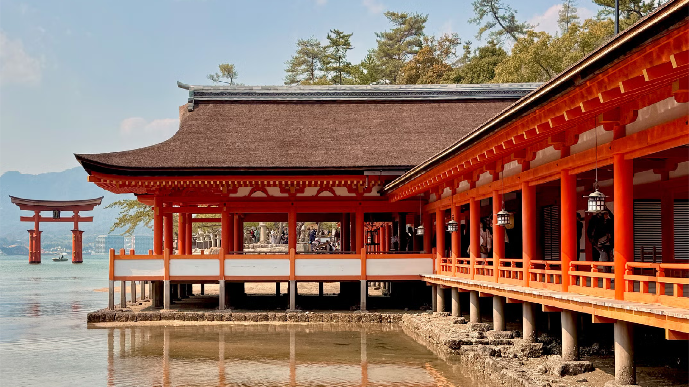
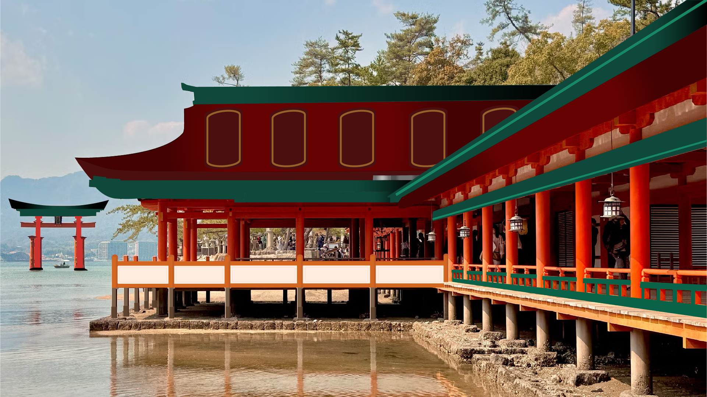

Japanese Home Illustration

{kind=link}

{kind=link}
I chose this Japanese temple environment because I love Japanese architecture and the peaceful scenery around the water. The bright red structure and the torii gate in the background made the image visually interesting and gave me clear shapes to work with in Illustrator. I first imported the photograph into Adobe Illustrator and placed it on its own layer, then locked that layer so I could use it as a guide. Using the Pen Tool and shape tools, I traced the main parts of the building such as the roof, pillars, railings, and windows. Leaving the people and background out to give the design contrast. I separated different elements into layers for the foreground, middle ground, and background to keep the design organized. Instead of copying every detail, I simplified the environment and transformed it into a cleaner illustrated style. This process helped turn the realistic photograph into a simplified vector illustration while still keeping the recognizable structure of the original environment.